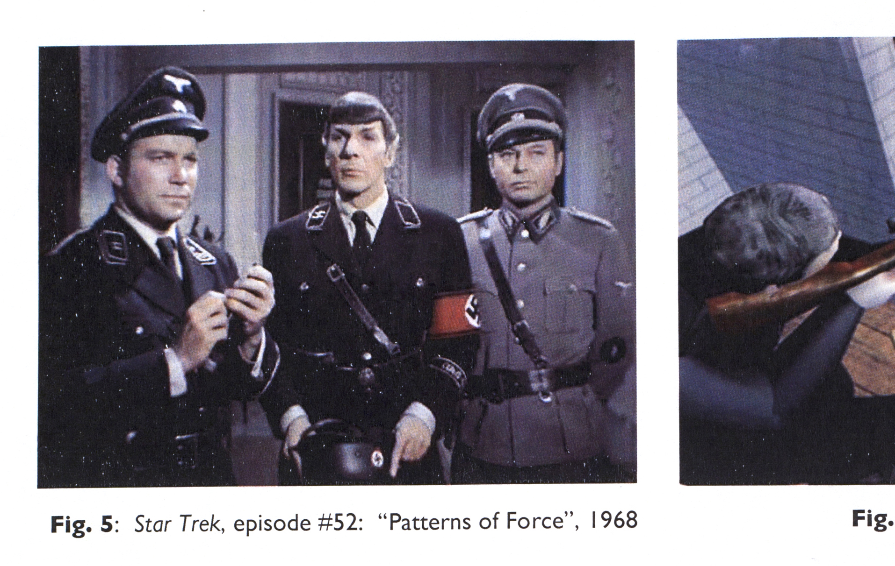
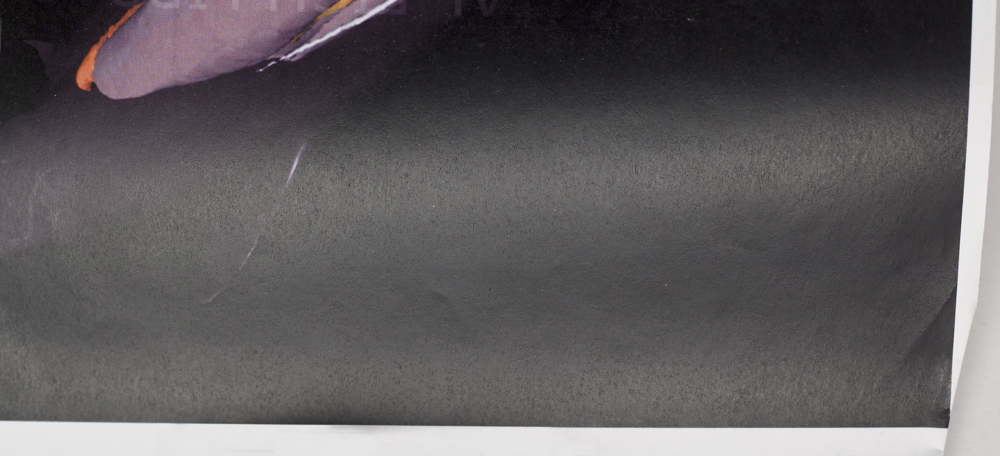
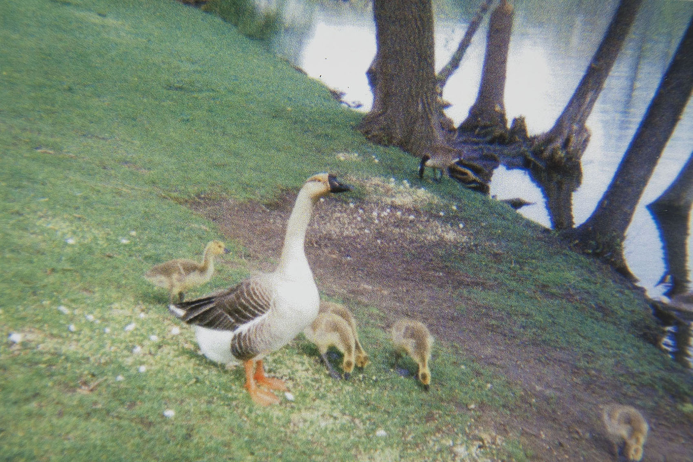
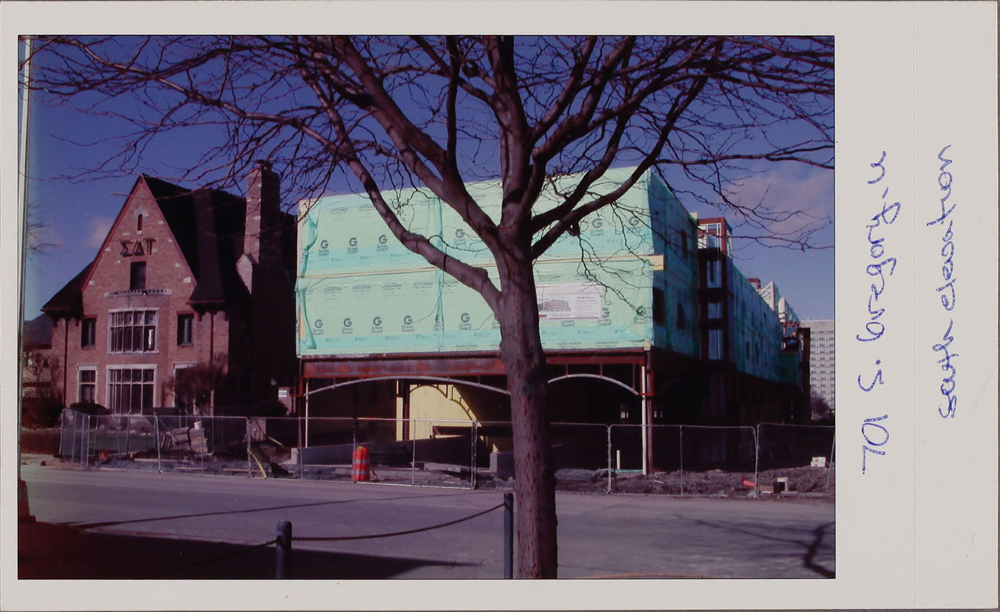
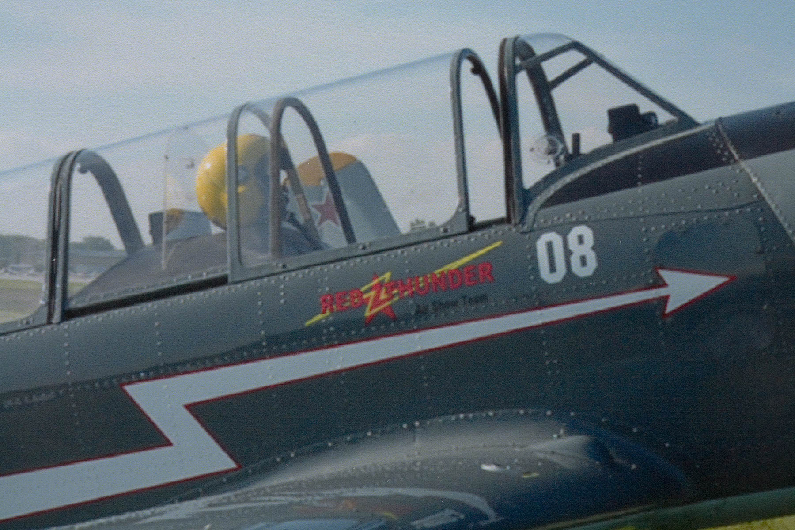
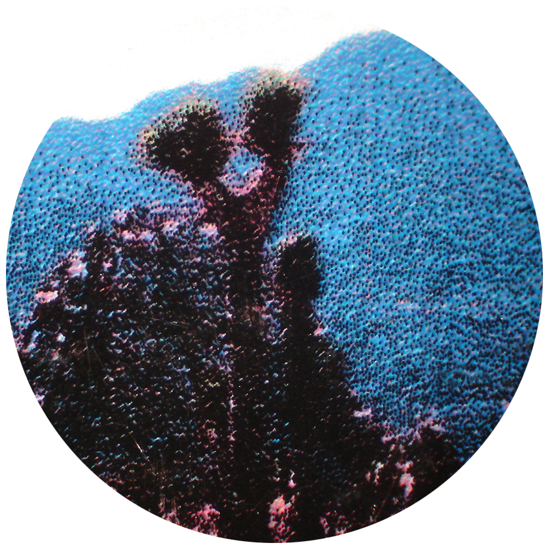
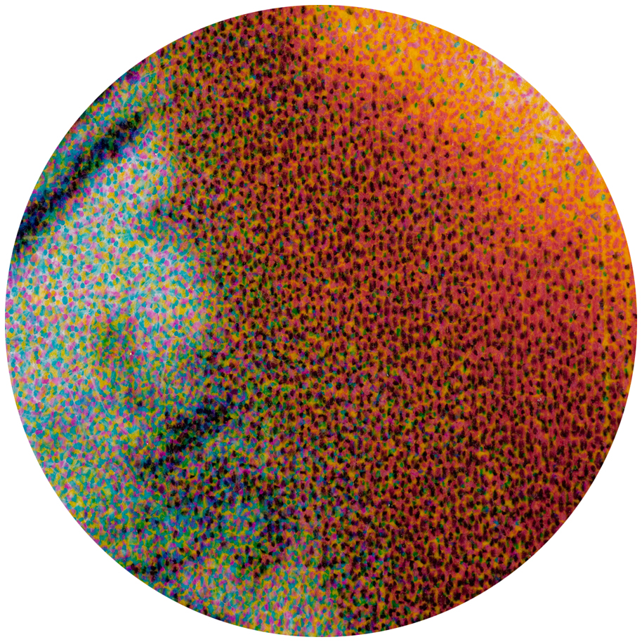
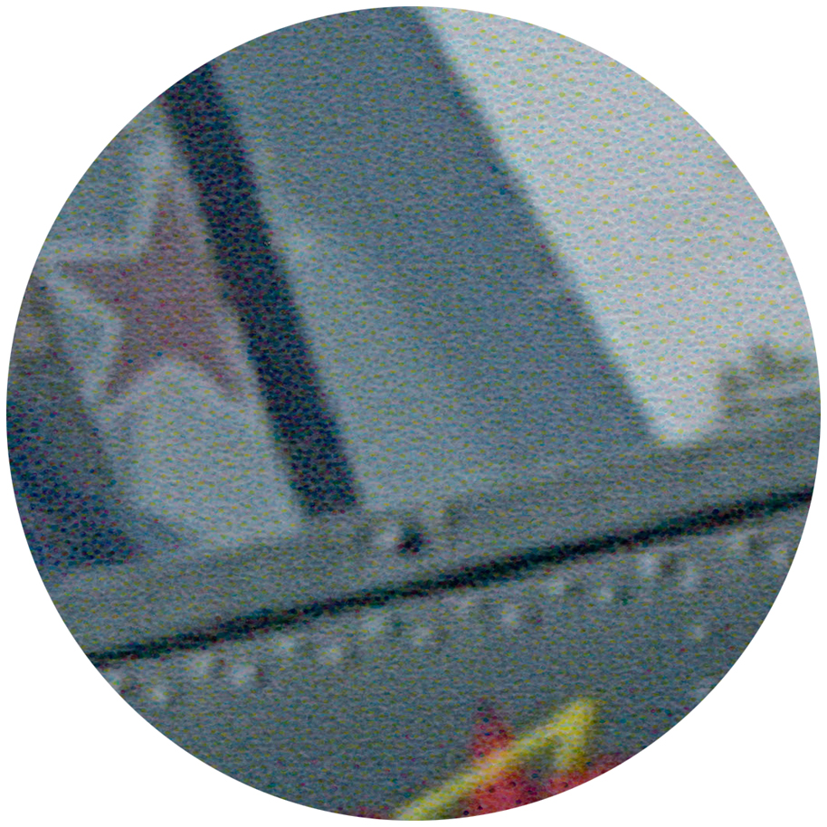
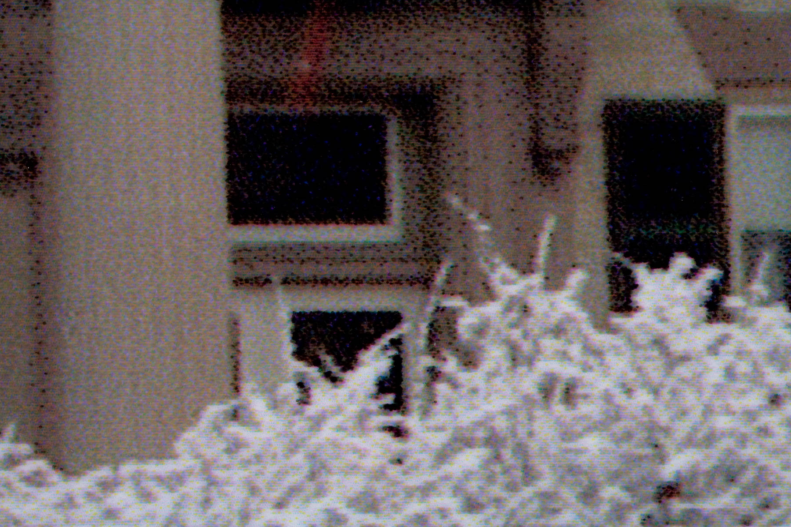
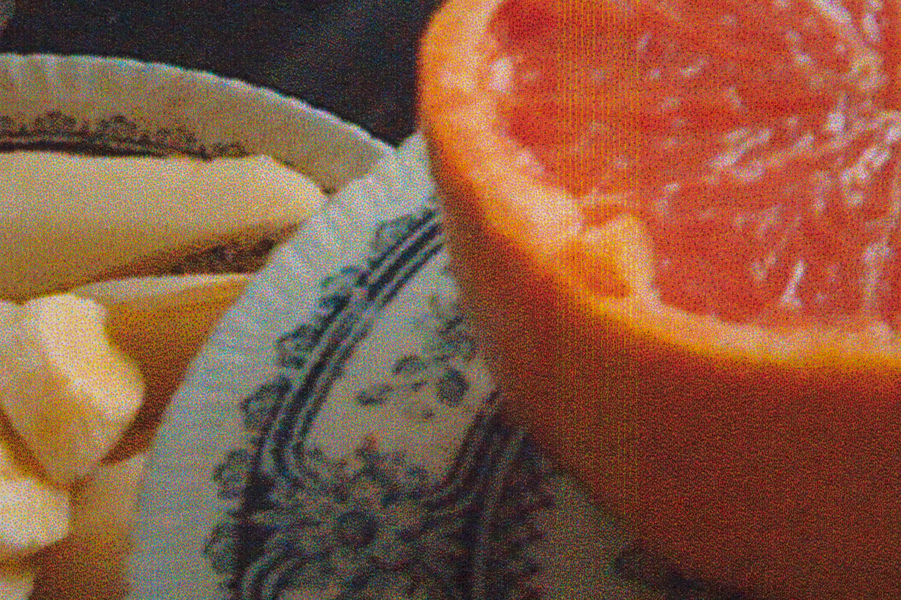

A digital print is any image or document that has been printed from a digital source (i.e. a digital image file). Although this term is becoming progressively more problematic as computers become more central to reformatting efforts, it is the best fit at the moment.
Like photomechanical prints, digital prints are not the direct products of a photographic process, in which a light-sensitive support is used. Rather, these prints are created by the application of coloring agents (e.g. ink, toner) to a support, which is typically made of paper, plastic, or cloth. As printing technologies progress, digital print processes grow: from inkjet and electrophotographic (laser) printing to color carbro and dye sublimation as well as to modern computer-to-plate processes like lithographic and photopolymer plates. For most non-art collections, the most common digital print formats will be of the desktop printing variety: inkjet or laser prints, which are the two office processes featured here.

Laser print (electrostatic) toner offsetting and image loss due to high heat.
Laser print document. Note the absence of imaging/scanning artifacts.

Laser print (electrostatic) toner surface lustre observed in raking light.
Dates
c. 1978 – present
Prevalence
Common
Support
Plain copy paper or polyester transparency film
Fibers (if paper)
Visible
Image/Text Tone
Monochrome (B&W) or color
Description
Laser printing is an electrostatic printing process that is nearly identical to the xerographic copy process—the difference being that laser prints come from a digital source (i.e. printed from a computer). Unlike the electrostatic photocopying processes, there are no visual artifacts or edges of an original document visible, and the text/image is square on the page. Laser prints can be made using the same toners as plain paper electrostatic copies. Prints may be monochromatic, using a toner that contains resin and black carbon pigment, or in color, using a CMYK toner that contains resin and four colored pigments—cyan, magenta, yellow, and black carbon pigment. Laser printing may also be used to produce oversized technical and architectural drawings.
Composition
Support
Image/Text
Paper (uncoated) or polyester transparency
Pigment-based toner (CMYK)
Deterioration
Black-and-white laser prints tend to be very stable and permanent since the toner is essentially black carbon pigment in a resin carrier. Proper processing will ensure permanence but is dependent upon the quality of the paper. Color laser prints may fade on light or water exposure due to the colored pigments used in the CMYK toner.
Risk Level
Low. Color prints are a higher preservation risk.
Process
The laser printing process is similar to electrostatic copying, but instead of copying an image from a hardcopy document, the image is transferred from an electronic file via laser. A drum is electrostatically charged with a laser that transfers the image to be printed. The charged areas of the drum picks up toner, which is then transferred to the paper and set with heat.
Background
In the late 1970s, laser printers became common for printing from mainframe computers in offices. Color laser printers and copiers emerged in the late 1980s, becoming common with desktops in the early to mid 1990s. At the same time, laser printing became economical for use with personal computers; and, it had become widely used by the end of the twentieth century. The HP Laserjet printer product line is often associated with consumer-grade laser printing technology today. Along with inkjet and impact printing, laser printing is one of the three main processes accounting for all copies from electronic files at the end of the twentieth century.
Storage Environment
Allowable Fluctuation: ±2°F; ±3% RH
Temp.
35–65°F (2–18°C)
RH
35–50% RH
Storage Enclosure(s)
Laser prints should not be encapsulated or placed in polyester sleeves. Loose, unbound records should be stored in acid-free file folders. Folders should be placed in acid-free or low-lignin archival boxes. Alternatively, folders may be stored in steel filing cabinets with a baked enamel finish. Care must be taken not to overfill folders and boxes. Documents should fit easily in folders and boxes; they should not be forced into enclosures that are too small. Spacer boards, which can be created using scored and folded acid-free board, may be placed in underfilled boxes to prevent folders from slumping or bending.
Storage Orientation
Vertically in file folders, placed vertically inside acid free storage boxes or steel filing cabinets.
Display Recommendations
Responsible display practices ensure the long-term preservation of collections. Facsimiles should be used whenever possible, and paper artifacts should not be displayed permanently. Light levels in the exhibition area should be kept low. Appropriate filters should be used to minimize exposure to ultraviolet light. Display cases should be enclosed and sealed to protect their contents, and their items should be securely framed or matted using preservation-quality materials that have passed the Photographic Activity Test (ISO 18916:2007).
Laser prints should be exposed to no more than 5,000 ft-c hours (50,000 lux hours) per year with a 3-year rest between displays.
Inkjet Print (Photo)

Inkjet print on coated paper. Courtesy of the Champaign County Archives, The Urbana Free Library.

Inkjet print on coated paper. Courtesy of the Champaign County Archives, The Urbana Free Library.

Pigment-based inkjet print on porous coated paper. Image courtesy of Image Permanence Institute, Graphics Atlas.
Inkjet print on porous coated paper. Image courtesy of Image Permanence Institute, Graphics Atlas.

Inkjet dot printing pattern (under magnification).

Inkjet dot printing pattern (under magnification). Image courtesy of Image Permanence Institute, Graphics Atlas.

Inkjet dot printing pattern (under magnification). Image courtesy of Image Permanence Institute, Graphics Atlas.
Synonyms
Giclée
Piezo pigment print
Dates
1984 – present; introduced in the 1950s
Surface Sheen
Matte (uncoated) or semi-gloss to high gloss (coated)
Paper Fibers
Visible (uncoated) or not visible (coated)
Image Tone
Full-color or monochrome
Description
An inkjet print is comprised of a paper support and a pigment- or dye-based ink. Paper may be uncoated or resin-coated (RC); and, either pigment or dye-based ink may be used. The inkjet printing process involves the application of tiny droplets of ink onto the paper surface. This super-fine dot structure produced by the printer’s ink spray will be visible under low magnification. As inkjet printers evolved, the dot structure became finer and less distinguishable to the naked eye. Images produced by ink on uncoated papers will appear fuzzy and ill-defined, while ink on coated papers will retain the dot formation and present crisp detail. A pigment-based ink on glossy coated paper will exhibit a differential surface gloss between areas of high and low ink density, especially when viewed under direct light. See Inkjet Print in the Office Printing and Reprography profile for additional information.
Composition
Support
Image
Paper (with or without resin-coated layer)
Ink (dye- or pigment-based)
Deterioration
Deterioration of inkjet prints depends greatly on the quality of the paper and type of ink. In general, inkjet prints made after the 1990s will more chemically permanent than their more predominantly dye-based predecessors. Inkjet prints are also highly sensitive to surface abrasion due to the ink’s shallow, delicate deposits; uncoated papers are more vulnerable to mechanical damage than coated. Inkjet on swellable coated paper is less susceptible to airborne pollutants and abrasion, since the inks are embedded in the image-receiving layer. Porous coated paper, however, does not buffer the effects of either. See Inkjet Papers for additional information on uncoated, porous, and swellable papers. All inkjet prints should be protected from humidity and light exposure; even neutral B&W prints will quickly discolor and fade to a yellowish-brown color.
Risk Level
Moderate to high. Preservation risks are highly variable, depending on ink and paper type, colorants (dye or pigment), receiving layer, and even original printer settings. Inkjet prints are prone to yellowing and staining, especially if exposed to high humidity, intense light, or atmospheric pollutants like ozone. Ink bleeding, streaking, and distortion may occur if exposed to moisture. Pigment-based inks are considerably more stable than dye-based, but they may also be water-based and therefore sensitive to moisture.
Common Size(s)
Varied; Due to their broad application, inkjet prints may be found in a multitude of sizes, although many will measure 8.5" × 11" and under.
Background
While the technology behind inkjet printing was developed in the 1950s, it was not a commercially viable process until the mid 1980s. The first commercially sold inkjet printer was released in 1984 by Hewlett-Packard. The quality of color inkjet prints improved dramatically during the 1990s, which led to a surge in its popularity, particularly in the amateur home market. From then on, inkjet printing has remained one of the most common print processes for digital files, texts, or images.
Storage Environment
Allowable Fluctuation: ±2°F; ±3% RH
Ideal
Acceptable
Temp.
< 27°F (-3°C)
< 65°F (18°C)
RH
50% RH
35–50% RH
Based on ISO 18920 and NISO TR01-1995
Storage Enclosure(s)
Acid-free (pH 7.2–9.5) enclosures and/or folders strongly advised. Each print should have its own enclosure to protect it from ink bleeds, dust, handling damage, and environmental shifting. This enclosure may be a paper (conservation-quality, acid-free) or plastic (uncoated polyester, polyethylene, polypropylene, cellulose triacetate) sleeve, envelope, or wrapper. Position the image side away from seams in paper enclosures. Such seams should be on the sides of the enclosure, not down its center. Enclosures should be stored in hanging file folders or archival storage boxes. All storage materials should pass the Photographic Activity Test (PAT) as specified in ISO Standard 18916:2007.
Storage Orientation
Never stack inkjet prints in indefinite storage. Store vertically with dividers between each print. May also be stored horizontally (flat), especially large format prints. Avoid folding or rolling prints. Enclosures and folders may be stored in hanging files or archival storage boxes. Wood cabinets should be avoided. Enameled steel, stainless steel, or anodized aluminum are preferred.
Display Recommendations
The duration of an exhibit should be determined in advance, and no item should be placed on display permanently. Most items should not be displayed for longer than 3 to 4 months, assuming other conditions such as light levels, temperature, and relative humidity are within acceptable ranges. Facsimiles or items of low artifactual value may be exhibited for longer periods of time. It should be returned to an appropriate environment where it may "rest" in dark storage between display periods.
Light levels should be kept as low as possible. When on display, objects should be protected from exposure to natural light, which contains high levels of UV radiation. Shades, curtains, or filters applied directly to windows will help to minimize this exposure. This is particularly important for inkjet prints, which are very sensitive to light. Display cases should be enclosed and sealed to protect their contents, and their items should be securely framed or matted using preservation-quality materials that have passed the Photographic Activity Test (ISO18916).
Inkjet papers are varied and complex. The types of paper described here are a general guide. Manufacturers typically do not indicate whether a paper is porous or swellable, but there are a few characteristics that can aid in identification. If a paper is labelled "instant dry," it is porous. Swellable papers may be labeled as "fast drying." Swellable papers may also be labeled as "high gloss" rather than just "glossy." Many inkjet printing papers have a manufacturer stamp on the back indicating the product name or brand; this also may be used to identify the paper type.
Uncoated paper
Uncoated paper is typically used for printing documents, since it does not yield high-quality image reproductions. The amount of ink used to print images usually causes the paper to cockle. Since the ink is absorbed directly by the paper, images are not vibrant or sharp. Some uncoated papers, those marketed especially for inkjet printers, are treated to address these problems; however, print quality is still lower than prints made with swellable or porous paper. Images printed on uncoated paper are likely the result of a consumer-grade inkjet printer and were probably printed in a home or office. Commercially produced prints are typically made on coated papers.
Dye ink on uncoated office paper. Courtesy of the Champaign County Archives, The Urbana Free Library.
Swellable coated paper
Swellable paper is comprised of resin-coated paper with an image-receiving layer. The image-receiving layer swells to absorb the liquid ink as it is sprayed during the printing process. This results in a vibrant, crisp image that sits in a layer on top of the paper rather than absorbing into it. Only dye-based inks are used to print on swellable paper, since pigment inks cannot absorb into the image-receiving layer. Swellable paper typically has a glossy finish that mimics traditional photo paper prints. Images printed on coated swellable paper may be produced professionally or at home. Swellable papers have decreased in popularity due to the fact that prints take some time to dry completely (sometimes up to 24 hours), as opposed to porous papers that dry instantly.

Dye ink on coated (porous) paper. Image courtesy of Image Permanence Institute, Graphics Atlas
Porous coated paper
Porous paper is comprised of paper with a surface layer of mineral particles attached to the paper by a polymer binder. These mineral particles create tiny pores on the surface of the paper that absorb ink and dry instantly. Porous paper typically is not as glossy as swellable paper, and it is manufactured with and without the resin-coated layer. Porous paper without resin-coated layers may be classified as "fine art paper" and is used to produce fine art called "giclée prints". However, not all fine art inkjet prints are made using porous papers. Images printed on porous paper may be produced professionally or at home. Inkjet prints on porous paper are more susceptible to abrasion than prints on swellable paper.
Inkjet Inks
The inks used in inkjet photo printers can be either predominantly dye-based or pigment-based.
Dye-based ink
Dye-based inks are cheaper and therefore used more widely than pigment-based inks in both home and office settings. Dye inks, however, are prone to a number of preservation issues. Dye inks are very sensitive to moisture; they will spread and run if even a single drop of water is introduced to the print surface.

Dye ink on uncoated office paper. Image courtesy of Image Permanence Institute, Graphics Atlas
Pigment-based ink
Pigment inks resist water quite well and are less likely to run or smear due to moisture. Pigment inks are also more lightfast than dye-based inks. If printed on a good-quality paper, they may last more than 100 years before any fading occurs. The main preservation concern with pigment ink prints is that pigment inks are more prone to abrasion, especially in areas of dense, dark color. Pigment inks may also be identified by a differential surface gloss between areas of high ink density and areas where no ink is present.
ISO. (2007). 18916 Imaging materials: Processed imaging materials–Photographic activity test for enclosure materials. Geneva, Switzerland: International Organization for Standardization.
National Information Standards Organization. (1995). NISO-TR01-1995: Environmental guidelines for the storage of paper records. Bethesda, MD: NISO Press.